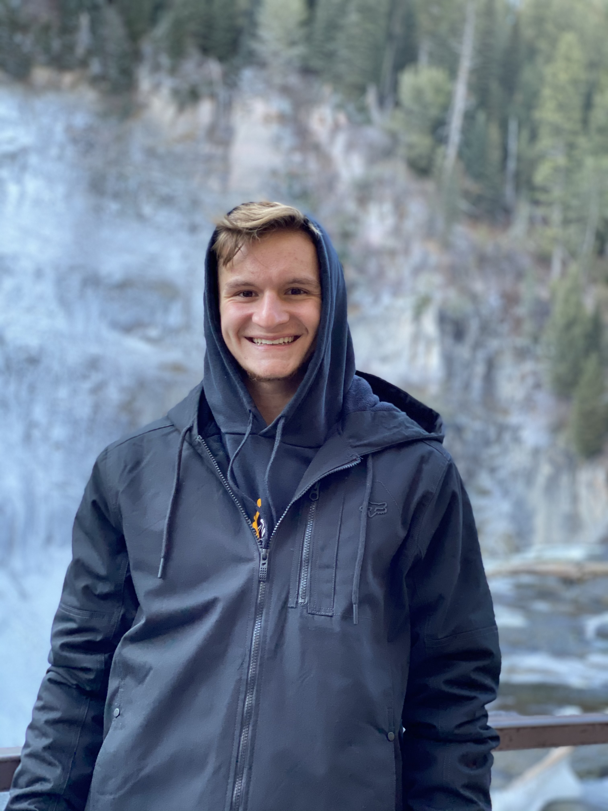

Dalin Kelly | WDD 130

Hello! My name is Dalin Kelly and I am from Puyallup, Washington. I enjoy both playing and watching basketball, baseball, and football. Since I am from the Seattle area, I always root for the Mariners and Seahawks, but when it comes to basketball I am still hoping for the day that we get a team again! Additionally, I like exploring the outdoors through hiking and backpacking. I love exploring the areas around Mount Rainier and I have even summited Mount St. Helens which is one of my favorite hikes I have done. I love to travel places and one of my favorite places I have been so far is in Cancun, Mexico. I would love to visit places in Europe and Asia but I don't know if I will ever have the time to do that. I am currently studying Business Analytics with a minor in Software Management and I am really enjoying them so far. I do not know what I plan to do after college but I am hoping that I can land a secure job through an internship.